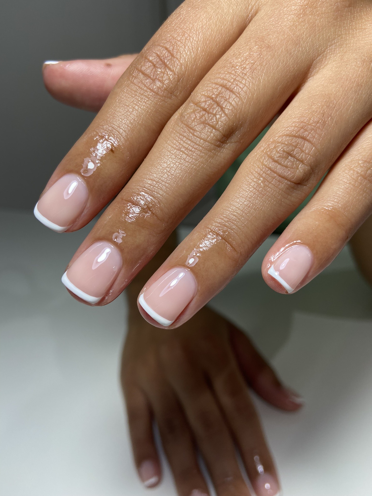

Manicures and Pedicures
Mini Manicure/Pedicure
Soak, filing, cuticle work, buff and shine and/or paint.
Spa Manicure/Pedicure
Soak, exfoliation, light massage, filing cuticle work, buff and shine and/or paint.
*Please note: the paint offered in this treatment is the Orly Breathable Nail Polish and does
not
include gel and nail art